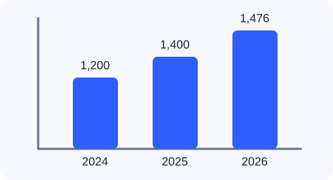

Learn how alternative text communicates the purpose and meaning of images to people who cannot see them.
TASK 02
Student: Aayush Pandey · Student ID: 202537201
Good alternative text depends on context. Informative images need a concise description, decorative images should be ignored by assistive technology, and linked images should communicate the link's purpose.
1. Four image examples
Informative imageAlt text describes the meaningful content of the campus illustration.
Decorative imageThis wave is decorative, so it uses an empty alt attribute (alt="").
Linked imageThe alt text communicates the link destination: Student Budget Tracker home.
Chart image

Summarize the trend and important values; provide a nearby data table if users need all details.
2. Before-and-after example
Before: missing alt attribute
<img src="campus-building.svg">
The image has no alternative text attribute.
After: descriptive alt text
<img src="campus-building.svg"
alt="University campus building with a blue roof...">
A concise description communicates the image's relevant information.
3. Check the examples
Run the checker to inspect the four images in this activity.
No check has been run yet.
4. Key points
Informative image: write useful alt text that conveys its relevant meaning.
Decorative image: use alt="" so it is skipped by screen readers.
Linked image: describe the link's destination or action.
Chart: summarize the main pattern and important values; include a nearby text equivalent for detailed data.